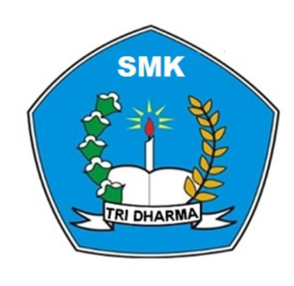
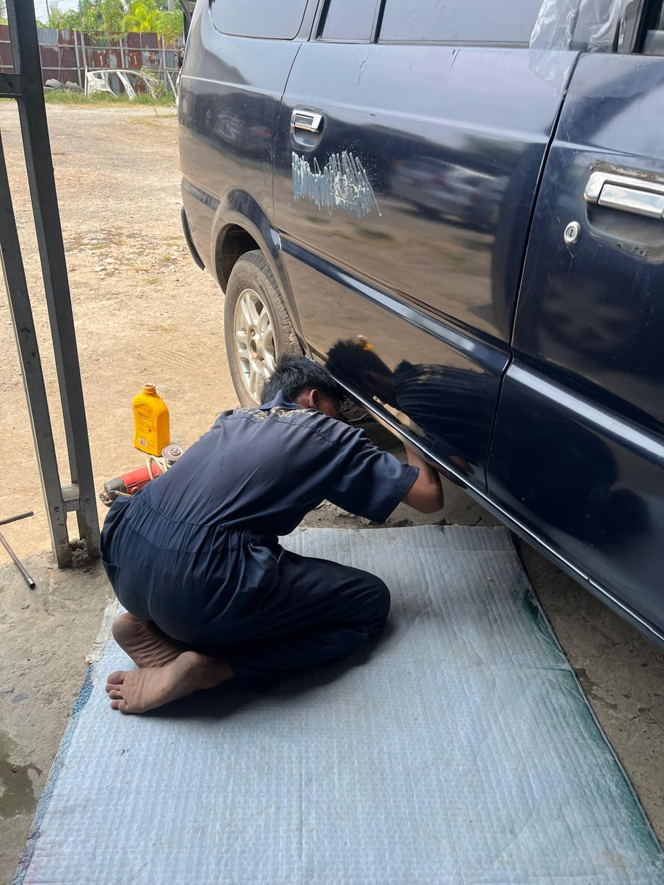
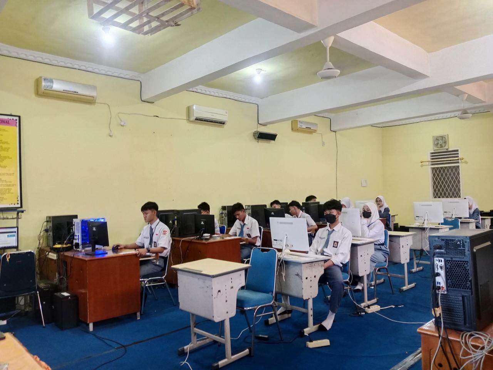
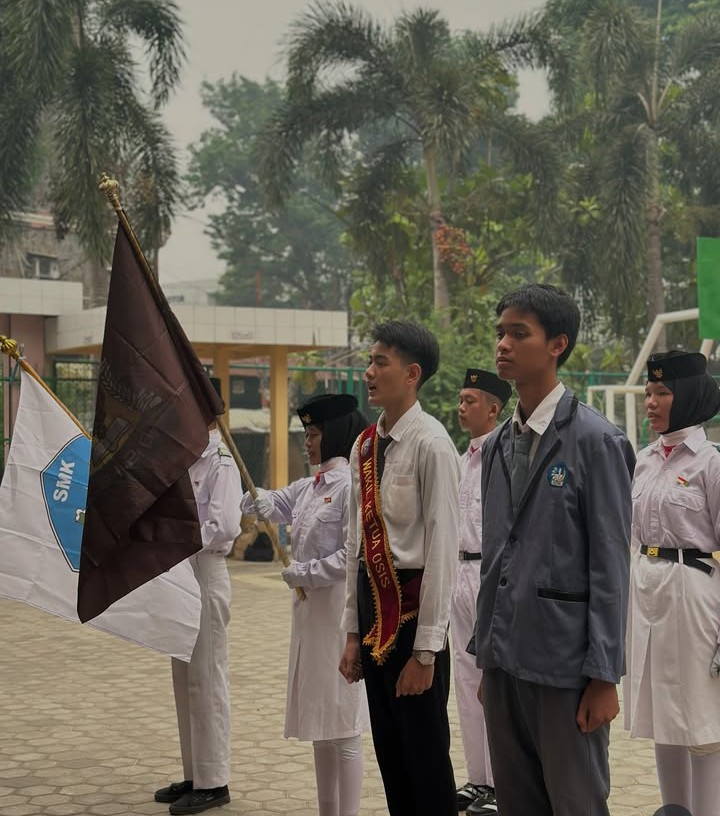
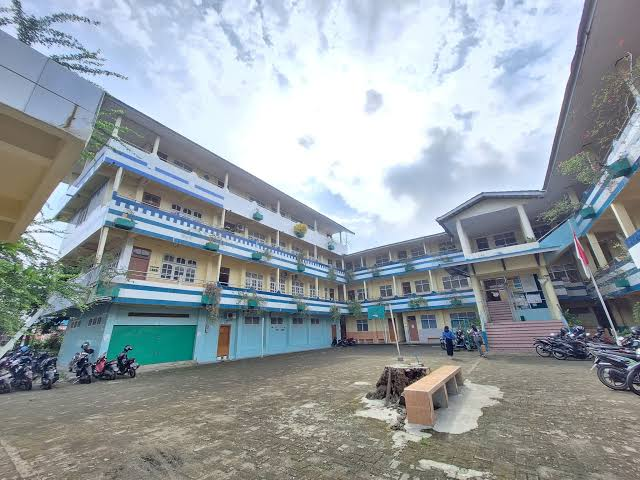

Pusat Pendidikan Kejuruan Berkualitas, Berkarakter, & Siap Kerja
Selamat datang di portal resmi SMK Tri Dharma Palembang. Kami berkomitmen penuh mendidik generasi muda yang kompeten, berakhlak mulia, profesional, dan siap menghadapi tantangan dunia kerja modern maupun wirausaha.
SMK Tri Dharma Palembang merupakan salah satu sekolah menengah kejuruan swasta yang berada di bawah naungan Yayasan Pendidikan Tri Dharma. Sekolah ini beralamat di Jalan Jaksa Agung R. Suprapto No. 18, Bukit Besar, Kecamatan Ilir Barat II, Kota Palembang, Sumatera Selatan.
Dalam perkembangannya, SMK Tri Dharma Palembang menyediakan beberapa program keahlian unggulan yang dirancang selaras dengan kebutuhan dunia industri dan dunia kerja (DUDI).
Ketuk pada masing-masing bidang keahlian untuk melihat informasi kurikulum:
Pilih kategori dokumentasi atau ketuk foto untuk memperbesar:

Praktik Siswa

Pembelajaran Kelas

Ekstrakurikuler

Lingkungan Sekolah